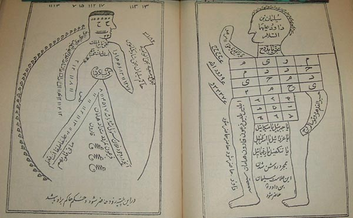
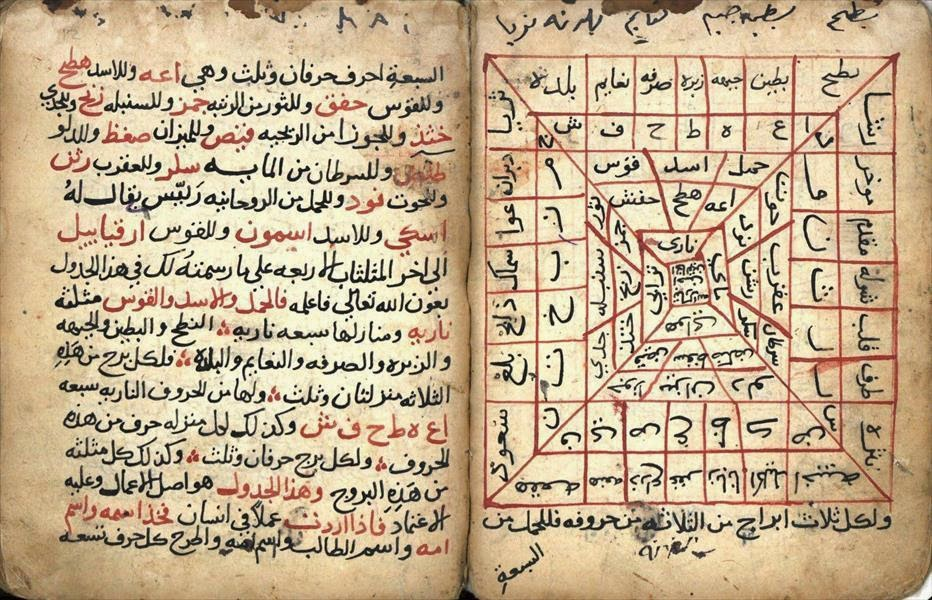
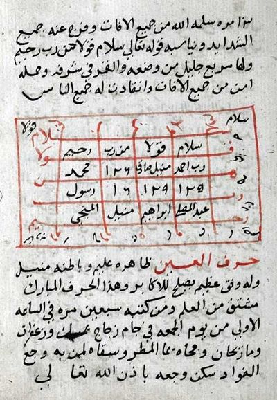
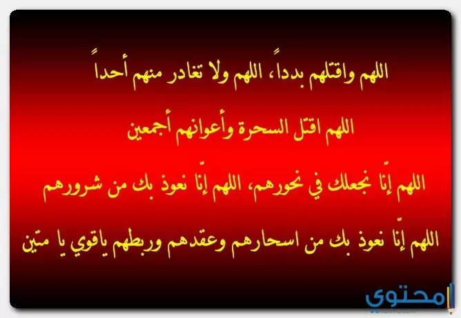
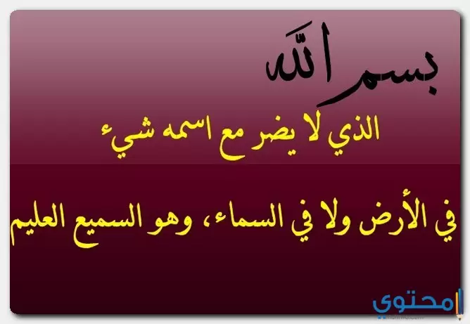
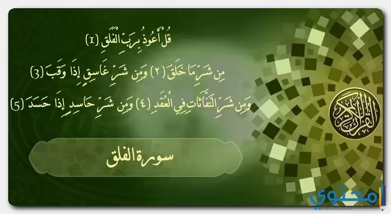
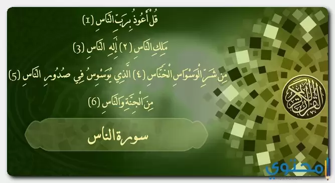
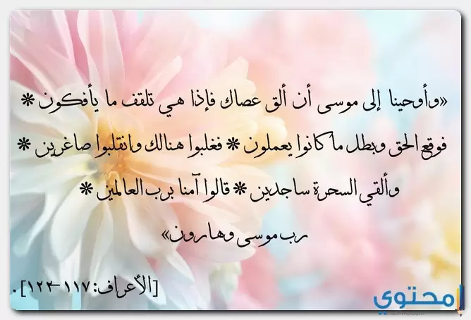

الجن لغة واصطلاحًا الجِنُّ بكسر الجيم هو اسمٌ لكلمة "الجانّ" ومفردها "جنِّيٌ" للمذكر و"جنِّيَّةٌ" للمؤنث، وهو من الفعل جَنَّ بفتح حرف الجيم، ومعناه غطَّى أو ستَرَ أو وارى، وقد وردَ هذا المعنى في قوله تعالى: {فَلَمَّا جَنَّ عَلَيْهِ اللَّيْلُ رَأَىٰ كَوْكَبًا}[١]، وهنا معناها سترَه أو حاق به، أمَّا في الاصطلاح فالجنُّ نوع من الأرواح غير المرئية، وهي عاقلة مريدة مكلَّفة كتكليف الإنسان تمامًا، والجنُّ مستترون عن حواس الإنسان، مغيَّبون عن نظره وحسِّه، وهم يأكلون ويشربون ويتناكحون ويُحاسَبون يوم القيامة، وقد خُلقوا من مارج من نار، قال تعالى: {وَخَلَقَ الْجَانَّ مِن مَّارِجٍ مِّن نَّارٍ}[٢]، وهذا المقال سيسلِّط الضوء على الجن العاشق وأعراض الجن العاشق وكيفية التخلص منه وتأثير مس الجن العاشق على الحياة الزوجية بين الناس. حكم إنكار وجود الجن في الإسلام قبل الخوض في أعراض الجن العاشق وطريقة التخلص منه، لا بدَّ من الإشارة إلى أنَّ الجانَّ موجودون دون أدنى شكٍّ، ذكرهم الله -سبحانه وتعالى- في كتابه الحكيم، وذكرهم رسول الله -صلَّى الله عليه وسلَّم- في السُّنَّة النَّبويَّة الشَّريفة، وقد أجمع أهل العلم على أنَّ إنكار وجود الجنِّ كُفر وردَّة عن الدين الإسلامي، فالأدلة في القرآن الكريم وفي صحيح السُّنَّة غير قابلة للشكِّ أبدًا، وإنَّما الطعن بها كفيل بإخراج الإنسان من الدِّين، فالجنُّ حقٌّ موجودون ويجب على كلِّ مُسلِمٍ أن يؤمنَ كلَّ الإيمانِ بوجودهم، ويعتبر الإيمان بوجود الجِنِّ من الغيبيات التي ينبغي على الإنسان أن يسلِّم بها دون أن يراها، وفيما يأتي بعض الآيات والأحاديث التي تُثبت وجود الجنِّ
اللهم سخر لي جميع خلقك كما سخرت البحر لسيدنا موسي عليه السلام وألن لي قلوبهم كما ألنت الحديد لداود عليه السلام فإنهم لا ينطقون إلا بإذنك نواصيهم في قبضتك وقلوبهم في يديك تصرفها كيف شئت يامقلب القلوب يامقلب القلوب يامقلب القلوب ثبت قلبي علي دينك ياعلام الغيوب ياعلام الغيوب ياعلام الغيوب أطفأت غضبهم بلا إله إلا الله واستجلبت محبتهم.
الرُّقية الشرعيّة لفكّ السِّحر عملُ السّحر في المسحور نوع من أنواع الابتلاء؛ فخير ما يفعله المسحور لنفسه للخروج من هذا الابتلاء هو اللجوء إلى الله تعالى، وأنْ يكون على يقين أنّ الله -سبحانه- هو القادر على فكّ السحر وإبطال أثره، ولا يصحُّ أنْ يلجأ المسلم لإبطال السحر بسحر مثله، وهو ما يُسمّى بالنُّشرَ؛ لورود النهي الصريح عن ذلك، حيث سُئِل رسول الله - صلّى الله عليه وسلّم- عن النُّشرة، فقال: «هي من عمل الشيطان»، ولا يُقبَلُ من المسلم سواءً كان راقيًا أو مَرْقِيًّا أنْ يستخدم من الرّقى ما فيه شركٌ، لقوله - عليه الصلاة والسلام-: «لا بأسَ بالرقَى ما لم تكنْ». ومن أنفع ما يُرقى به المسحور من الآيات القرانية والأدعية ما يلى: 1- سورة الفاتحة: «بِسْمِ اللَّـهِ الرَّحْمَـٰنِ الرَّحِيمِ*الْحَمْدُ لِلَّـهِ رَبِّ الْعَالَمِينَ*الرَّحْمَـٰنِ الرَّحِيمِ*مَالِكِ يَوْمِ الدِّينِ*إِيَّاكَ نَعْبُدُ وَإِيَّاكَ نَسْتَعِينُ*اهْدِنَا الصِّرَاطَ الْمُسْتَقِيمَ*صِرَاطَ الَّذِينَ أَنْعَمْتَ عَلَيْهِمْ غَيْرِ الْمَغْضُوبِ عَلَيْهِمْ وَلَا الضَّالِّينَ». 2- أولٌ سورة البقرة: «الم*ذَٰلِكَ الْكِتَابُ لَا رَيْبَ ۛ فِيهِ ۛ هُدًى لِّلْمُتَّقِينَ*الَّذِينَ يُؤْمِنُونَ بِالْغَيْبِ وَيُقِيمُونَ الصَّلَاةَ وَمِمَّا رَزَقْنَاهُمْ يُنفِقُونَ*وَالَّذِينَ يُؤْمِنُونَ بِمَا أُنزِلَ إِلَيْكَ وَمَا أُنزِلَ مِن قَبْلِكَ وَبِالْآخِرَةِ هُمْ يُوقِنُونَ*أُولَـٰئِكَ عَلَىٰ هُدًى مِّن رَّبِّهِمْ ۖ وَأُولَـٰئِكَ هُمُ الْمُفْلِحُونَ». 3- «يَكَادُ الْبَرْقُ يَخْطَفُ أَبْصَارَهُمْ كُلَّمَا أَضَاءَ لَهُم مَّشَوْا فِيهِ وَإِذَا أَظْلَمَ عَلَيْهِمْ قَامُوا وَلَوْ شَاءَ اللَّـهُ لَذَهَبَ بِسَمْعِهِمْ وَأَبْصَارِهِمْ إِنَّ اللَّـهَ عَلَى كُلِّ شَيْءٍ قَدِيرٌ». 4- «وَاتَّبَعُوا مَا تَتْلُو الشَّيَاطِينُ عَلَىٰ مُلْكِ سُلَيْمَانَ وَمَا كَفَرَ سُلَيْمَانُ وَلَـٰكِنَّ الشَّيَاطِينَ كَفَرُوا يُعَلِّمُونَ النَّاسَ السِّحْرَ وَمَا أُنزِلَ عَلَى الْمَلَكَيْنِ بِبَابِلَ هَارُوتَ وَمَارُوتَ وَمَا يُعَلِّمَانِ مِنْ أَحَدٍ حَتَّىٰ يَقُولَا إِنَّمَا نَحْنُ فِتْنَةٌ فَلَا تَكْفُرْ فَيَتَعَلَّمُونَ مِنْهُمَا مَا يُفَرِّقُونَ بِهِ بَيْنَ الْمَرْءِ وَزَوْجِهِ وَمَا هُم بِضَارِّينَ بِهِ مِنْ أَحَدٍ إِلَّا بِإِذْنِ اللَّـهِ وَيَتَعَلَّمُونَ مَا يَضُرُّهُمْ وَلَا يَنفَعُهُمْ وَلَقَدْ عَلِمُوا لَمَنِ اشْتَرَاهُ مَا لَهُ فِي الْآخِرَةِ مِنْ خَلَاقٍ وَلَبِئْسَ مَا شَرَوْا بِهِ أَنفُسَهُمْ لَوْ كَانُوا يَعْلَمُونَ». 5- «وَإِلَـٰهُكُمْ إِلَـٰهٌ وَاحِدٌ لَّا إِلَـٰهَ إِلَّا هُوَ الرَّحْمَـٰنُ الرَّحِيمُ*إِنَّ فِي خَلْقِ السَّمَاوَاتِ وَالْأَرْضِ وَاخْتِلَافِ اللَّيْلِ وَالنَّهَارِ وَالْفُلْكِ الَّتِي تَجْرِي فِي الْبَحْرِ بِمَا يَنفَعُ النَّاسَ وَمَا أَنزَلَ اللَّـهُ مِنَ السَّمَاءِ مِن مَّاءٍ فَأَحْيَا بِهِ الْأَرْضَ بَعْدَ مَوْتِهَا وَبَثَّ فِيهَا مِن كُلِّ دَابَّةٍ وَتَصْرِيفِ الرِّيَاحِ وَالسَّحَابِ الْمُسَخَّرِ بَيْنَ السَّمَاءِ وَالْأَرْضِ لَآيَاتٍ لِّقَوْمٍ يَعْقِلُونَ». 6- «اللَّـهُ لَا إِلَـٰهَ إِلَّا هُوَ الْحَيُّ الْقَيُّومُ لَا تَأْخُذُهُ سِنَةٌ وَلَا نَوْمٌ لَّهُ مَا فِي السَّمَاوَاتِ وَمَا فِي الْأَرْضِ مَن ذَا الَّذِي يَشْفَعُ عِندَهُ إِلَّا بِإِذْنِهِ يَعْلَمُ مَا بَيْنَ أَيْدِيهِمْ وَمَا خَلْفَهُمْ وَلَا يُحِيطُونَ بِشَيْءٍ مِّنْ عِلْمِهِ إِلَّا بِمَا شَاءَ وَسِعَ كُرْسِيُّهُ السَّمَاوَاتِ وَالْأَرْضَ وَلَا يَئُودُهُ حِفْظُهُمَا وَهُوَ الْعَلِيُّ الْعَظِيمُ». 7- «آمَنَ الرَّسُولُ بِمَا أُنزِلَ إِلَيْهِ مِن رَّبِّهِ وَالْمُؤْمِنُونَ كُلٌّ آمَنَ بِاللَّـهِ وَمَلَائِكَتِهِ وَكُتُبِهِ وَرُسُلِهِ لَا نُفَرِّقُ بَيْنَ أَحَدٍ مِّن رُّسُلِهِ وَقَالُوا سَمِعْنَا وَأَطَعْنَا غُفْرَانَكَ رَبَّنَا وَإِلَيْكَ الْمَصِيرُ*لَا يُكَلِّفُ اللَّـهُ نَفْسًا إِلَّا وُسْعَهَا لَهَا مَا كَسَبَتْ وَعَلَيْهَا مَا اكْتَسَبَتْ رَبَّنَا لَا تُؤَاخِذْنَا إِن نَّسِينَا أَوْ أَخْطَأْنَا رَبَّنَا وَلَا تَحْمِلْ عَلَيْنَا إِصْرًا كَمَا حَمَلْتَهُ عَلَى الَّذِينَ مِن قَبْلِنَا رَبَّنَا وَلَا تُحَمِّلْنَا مَا لَا طَاقَةَ لَنَا بِهِ وَاعْفُ عَنَّا وَاغْفِرْ لَنَا وَارْحَمْنَا أَنتَ مَوْلَانَا فَانصُرْنَا عَلَى الْقَوْمِ الْكَافِرِينَ». 8- « قُلْ هُوَ اللَّـهُ أَحَدٌ*اللَّـهُ الصَّمَدُ*لَمْ يَلِدْ وَلَمْ يُولَدْ*وَلَمْ يَكُن لَّهُ كُفُوًا أَحَدٌ»، مع التكرار ثلاث مراتٍ. 9- « قُلْ أَعُوذُ بِرَبِّ الْفَلَقِ*مِن شَرِّ مَا خَلَقَ*وَمِن شَرِّ غَاسِقٍ إِذَا وَقَبَ*وَمِن شَرِّ النَّفَّاثَاتِ فِي الْعُقَدِ*وَمِن شَرِّ حَاسِدٍ إِذَا حَسَدَ)، مع التكرار ثلاث مراتٍ. 10- «قُلْ أَعُوذُ بِرَبِّ النَّاسِ*مَلِكِ النَّاسِ*إِلَـهِ النَّاسِ*مِن شَرِّ الْوَسْوَاسِ الْخَنَّاسِ*الَّذِي يُوَسْوِسُ فِي صُدُورِ النَّاسِ*مِنَ الْجِنَّةِ وَالنَّاسِ» ٨مع تكرارها أيضًا ثلاث مراتٍ. 11- «وَأَوحَينا إِلى موسى أَن أَلقِ عَصاكَ فَإِذا هِيَ تَلقَفُ ما يَأفِكونَ*فَوَقَعَ الحَقُّ وَبَطَلَ ما كانوا يَعمَلونَ*فَغُلِبوا هُنالِكَ وَانقَلَبوا صاغِرينَ». 12- «وَقالَ فِرعَونُ ائتوني بِكُلِّ ساحِرٍ عَليمٍ*فَلَمّا جاءَ السَّحَرَةُ قالَ لَهُم موسى أَلقوا ما أَنتُم مُلقونَ*فَلَمّا أَلقَوا قالَ موسى ما جِئتُم بِهِ السِّحرُ إِنَّ اللَّـهَ سَيُبطِلُهُ إِنَّ اللَّـهَ لا يُصلِحُ عَمَلَ المُفسِدينَ*وَيُحِقُّ اللَّـهُ الحَقَّ بِكَلِماتِهِ وَلَو كَرِهَ المُجرِمونَ، قالوا يا موسى إِمّا أَن تُلقِيَ وَإِمّا أَن نَكونَ أَوَّلَ مَن أَلقى*قالَ بَل أَلقوا فَإِذا حِبالُهُم وَعِصِيُّهُم يُخَيَّلُ إِلَيهِ مِن سِحرِهِم أَنَّها تَسعى*فَأَوجَسَ في نَفسِهِ خيفَةً موسى*قُلنا لا تَخَف إِنَّكَ أَنتَ الأَعلى*وَأَلقِ ما في يَمينِكَ تَلقَف ما صَنَعوا إِنَّما صَنَعوا كَيدُ ساحِرٍ وَلا يُفلِحُ السّاحِرُ حَيثُ أَتى». 13- «أعوذُ باللَّهِ السَّميعِ العليمِ منَ الشَّيطانِ الرَّجيمِ من همزِهِ ونفخِهِ ونفثِهِ». 14-«أَعوذُ بكلِماتِ اللهِ التامَّاتِ، الَّتي لا يُجاوِزُهُنَّ بَرٌّ ولا فاجرٌ، مِن شرِّ ما خلقَ، وذرأَ، وبرأَ، ومِن شرِّ ما ينزِلُ مِن السَّماءِ ومِن شرِّ ما يعرُجُ فيها ومِن شرِّ ما ذرأَ في الأرضِ وبرأَ ومِن شرِّ ما يَخرجُ مِنها، ومِن شرِّ فِتَنِ اللَّيلِ والنَّهارِ، ومِن شرِّ كلِّ طارقٍ يطرُقُ، إلَّا طارقًا يطرقُ بِخَيرٍ، يا رَحمنُۚ». 15- «بسمِ اللَّهِ الَّذي لا يضرُّ معَ اسمِهِ شيءٌ في الأرضِ ولَا في السَّماءِ، وَهوَ السَّميعُ العليمُ، باسْمِ اللهِ أَرْقِيكَ، مِن كُلِّ شيءٍ يُؤْذِيكَ، مِن شَرِّ كُلِّ نَفْسٍ، أَوْ عَيْنِ حَاسِدٍ، اللَّهُ يَشْفِيكَ باسْمِ اللهِ أَرْقِيكَ». 16- «اللهم إني أسألُك العافيةَ في الدنيا والآخرةِ، اللهم إني أسألُك العفوَّ والعافيةَ في ديني ودنياي وأهلي ومالي، اللهم استرْ عورتي وآمنْ روعاتي، اللهم احفظْني مِن بين يديَّ ومن خلفي وعن يميني وعن شمالي ومن فوقي، وأعوذُ بعظمتِك أن أُغتالَ مِن تحتي».
حقيقة الإصابة بالعين والحسد لا تكون الإصابة بالعين والسِّحر إلّا بقضاء وقدر الله سبحانه، فلا يمكن للعين أن تسبق القدر، حيث قال الرسول - صلّى الله عليه وسلّم-: «لو كان شيءٌ سابَق القدرَ لسبقَتْه العَيْنُ»، كما لا بدّ للعبد المؤمن إحسان الظن بالله وحُسن التوكّل عليه، فلن يصيب العبد إلّا ما كتب الله عليه، فلو اجتمع جميع البشر على أن يصيبوه بشيءٍ لا يمكن لهم أن يصيبوه إلّا بما قدّره الله له. وقد جاء التحذير منه والتهديد الشديد لفاعله، فالساحر يستحقّ اللعنة؛ لأنّه من المُفسدين في الأرض، قال- تعالى-: «فَلَمّا أَلقَوا قالَ موسى ما جِئتُم بِهِ السِّحرُ إِنَّ اللَّهَ سَيُبطِلُهُ إِنَّ اللَّهَ لا يُصلِحُ عَمَلَ المُفسِدينَ»، ورغم ذلك لا زال بعض ضِعاف الإيمان يلجؤون إلى عمل السّحر؛ لأذيّة عباد الله، وقد أقرّ الإسلام حقيقة السِّحر وتأثيره على المسحور، وبيّن العلماء والمختصّون سُبُلَ تحصين النفس من هذا الخطر، وطُرُقَ التّخلص من السّحر الواقع وشرّه. السحر والوقاية منه وعلاجه يعرف السحر بأنه التخيل المحض، وهو ما خفي سببه من كل أمر، وجرى مجرى الخداع والتمويه، وبالتالي صرِف الشيء عن صورته الحقيقية إلى ما يخالفها، وقد أثبته أهل السنة، كما يحرم تعلمّه وتعليمه والعمل به، وهو كبيرة من الكبائر، وذلك مما أجمع عليه أهل العلم. علاج السحر يعالج بقراءة آيات وسور من القرآن الكريم، فيقرأ المسلم على نفسه، أو يقرأ غيره عليه، وينفث في صدره، أو أي عضو آخر، فيقرأ سورة الفاتحة، وآية الكرسي، وسورة الصمد يكررها، والمعوذتين يقرأها ثلاث مرات، وآيات السحر المعروفة من سورة يونس، وطه، والأعراف، ويقرأ الأدعية الشرعية ويكررها ثلاث مرات. العين والوقاية منها العين ناتج عن استحسان المرء لشيء ما، يشوب هذا الاستحسان الحسد، ويحصل للمعيون من جرّائه الضرر، وهو حق بأمر الله – تعالى- أما علاج العين والوقاية منها فيكون: بالاستعاذة بالله، والإكثار من تلاوة القرآن الكريم، والاستغفار، وبقراءة الأذكار المشروعة، كأذكار الدخول والخروج، وأذكار الصباح والسماء، وقراءة الرقية الشرعية والتي منها سورة الفاتحة، وآية الكرسي وآيات السحر من سورة الأعراف، وتلك التي في سورة يونس، وسورة طه، وسورة الكافرون، وتكرار سورة الإخلاص والمعوذتين، والتفل على النفس والنفث عليها، أو على من ترقيه بعد الانتهاء من القراءة؛ فقد كان النبي - صلى الله عليه وسلم- يفعل ذلك. تحصين النّفس يحسُنُ بالمسلم أن يبقى دائمًا على حذر من الوقوع فيما فيه أذىً وشرّ له، وذلك بتحصين نفسه؛ ويكون ذلك ابتداءً من تحقيق معنى التوحيد لله سبحانه، ونبذ الشركيّات من حياته، والإخلاص لله -تعالى- بالتّوجه والإنابة، وأن يُحافظ على صلاة الجماعة؛ فإنّها حصنٌ متين وحمايةٌ ربانيّة، وعليه أن يجتهد بالتّوبة من كلّ الذنوب، ويجتهد في تخليص نفسه من الآثام؛ فإنَّ فِعْلُ ذلك يجعله أقربَ إلى العافية والسلامة من الأذى، كما يجدر بالمسلم أنْ يحرص على الالتزام بقراءة أذكار الصباح والمساء.
اقوى دعاء لفك السحر والعين مكتوب :- أعوذ بالله العلى العظيم من شر كل لابس ولامس ومن شر خادم السحر والحارس. أعوذ بالله العلى العظيم من نزغات الشياطين وجنودهم وأعوانهم. أعوذ بالله العلى العظيم من شر الحاقدين ومن شر الحاسدين ومن شر العائنين ومن شر الناظرين ومن العاشقين ومن شر الساحرين والشياطين. بسم الله أرقيك من كل شيء يؤذيك من شر كل نفس أو عين حاسد الله يشفيك. بسم الله أرقيك من كل داء يؤذيك ومن كل بلاء يؤذيك ومن كل شر وشقاء يشقيك ومن كل نفس أو عين حاقد أو عين حاسد ومن كل نفس أو سحر ساحر أو كيد كائد. بسم الله أرقيك من شر النفاثات في العقد ومن شر حاقد إذا حقد ومن شر حاسد إذا حسد ومن شر ساحر إذا سحر من شر ناظر إذا نظر ومن شر ماكر إذا مكر. بسم الله أرقيك والله يرعاك والله يشفيك والله يشفيك والله يبرؤك والله يجيرك والله يجبرك والله يعيذك والله يعصمك والله يحفظك. بسم الله أرقيك من وساوس الصدر وشتات الأمر من الأمراض والأوهام من نزغات الشيطان ومن الأسقام من الكوابيس ومن مزعجات الأحلام. وَإِنَّا عَلَى ذَهَابٍ بِهِ لَقَادِرُونَ. اللهم أنت ربي لا إله إلا أنت عليك توكلت وأنت ربُ العرش العظيم ما شاء الله كان ومالم يشأ لم يكن لا حول ولا قوة إلا بالله العلي العظيم أعلم أن الله على كل شيء قدير وأن الله قد أحاط بكل شيئ علماً.

اللهم أخرج كل عين وحسد اللهم أصرف كل داء عن الروح والجسد . اللهم أخرج كل عين من حيث دخلت اللهم رد البصر خاسئاً حسيراً اللهم أذهب حر العين وبردها ووصبها. اللهم أبطل تأثير العين والحسد اللهم أخرج كل عين لامّه، اللهم أخرج كل العيون الأمة اللهم أخرج كل عين قويه اللهم أخرج كل عين قديمة. اللهم أخرج كل معجبه كل عين متعجبه اللهم أخرج كل عين منها تعجبت اللهم بالزينة أعجبت وتعجبت. اللهم أخرج كل عين نظرت استحسنت وتمعنت وركزت، اللهم أخرج كل عين نظرت وامرضت وأهلكت كل نظره تكررت وما بركت. اللهم أخرج كل عين حاسد حاقد وكل نفس خبيثة مبغضه لزوال النعم تمنت، اللهم أخرج كل عين قوية أو عين حاره. اللهم أذهب حرارة العيون، اللهم أذهب ما حل بسببها من ألم وتعب ومرض ونكد وضيق في الصدر وآلماً في الظهر. اللهم أبطل أثر كل عين بالروح امتزجت، اللهم أخرج كل عين كبيره لكل شي شملت اللهم إشفي من كل عين العائن أو الحاسد أثر. اللهم إشفي من كل عين بوصف الحاسد وبنفس السامع للوصف أثر اللهم أخرج عيون الناس.
دعاء يبعد الحسد والعين :- يسعى الإنسان دائماً في أن يعرف دعاء يبعد الحسد والعين حتى يستطيع أن يحصن نفسه، كما أن دعاء يبعد الحسد والعين أحد الأدعية التي تحصن الإنسان من الشرور. اللهم أخرج عيون الأقارب وعيون المعارف والأصدقاء، اللهم أخرج أعين وأنفس الجن. اللهم أخرج كل عين من الرجال أصابت أو النساء أو الأطفال أصابت، اللهم أخرج كل عين في البيوت أصابت واستقرت أو في زينة البيت. اللهم ياكاشف ضر أيوب من وجعه وألمه اكشف عنا عين الناظرين والحاسدين عينٌ جاءت فجعجعت غارت فانفلقت طارت فانقطعت فأصابها إعصار فيه نارٌ فاحترقت. نعوذ بكلمات الله التامات التي نام بها أصحاب الكهف والرقيم اللَّهُ يَتَوَفَّى الْأَنْفُسَ حِينَ مَوْتِهَا وَالَّتِي لَمْ تَمُتْ فِي مَنَامِهَا فَيُمْسِكُ الَّتِي قَضَى عَلَيْهَا الْمَوْتَ وَيُرْسِلُ الْأُخْرَى إِلَى أَجَلٍ مُسَمًّى. اللهم ألق السكينة علينا ثُمَّ أَنْزَلَ عَلَيْكُمْ مِنْ بَعْدِ الْغَمِّ أَمَنَةً نُعَاسًا. خاتمة اقوى دعاء لفك السحر والعين مكتوب:- وقد جاء في ختام موضوعنا عن اقوى دعاء لفك السحر والعين مكتوب أنه يقول الرسول صل الله عليه وسلم ” العين حق ولو كان شيء سابق القدر لسبقته العين، وإذا استغسلتم فاغسلوا”، وهذا يدل على الآثار السيئة التي تتركها العين على المحسود، بالإضافة إلى أن السحر تم ذكره في القرآن الكريم، لذلك يجب على كل مسلم أن يحصن نفسه بالأدعية وذكر الله، حتى لا يقع فريسة لأصحاب النفوس المريضة، والتي تستحل حرمات الله وتأذي الناس بالعين والسحر.
اقوى دعاء لفك السحر السحر من الأشياء التي من الممكن أن يؤذي به الإنسان غيره، ولنا في ذلك أدلة كثيرة؟ أولها أن رسولنا الكريم -عليه أفضل الصلاة والسلام- قد تعرض للسحر, كما جاء في السنة النبوية الشريفة. وأنه قد تأذى -صلوات الله عليه وتسليمه-! لهذا نجد النبي قد حذر من السحر تحذيراً شديد اللهجة, كما جاء في حديثه الشريف.. «اجتنبوا السبْع الموبقات، قالوا: يا رسول الله، ما هي؟ قال: (الشرك بالله، والسِّحر…)»، واقوى دعاء لفك السحر ما لا يتنافى مع سنة الله ورسوله. «قل اللهم مالك الملك تؤتي الملك من تشاء وتنزع الملك ممن تشاء وتعز من تشاء وتذل من تشاء.. بيدك الخير إنك علىٰ كل شيء قدير.. *تولج الليل في النهار وتولج النهار في الليل، وتخرج الحي من الميت، وتخرج الميت من الحي، وترزق من تشاء بغير حساب». أعوذ بالله السميع العليم من الشيطان الرجيم.. بسم الله الرحمن الرحيم، بسم الله أصبحنا وأمسينا بالله الذي ليس منه شيء ممتنع.. وبعزة الله التي لا ترام ولا تضام، وبسلطان الله المنيع نحتجب، وبأسمائه الحسنى كلها عائذا من شياطين الإنس والجن، ومن شر كل معلن أو مس، ومن شر ما يسرح بالليل ويكمن بالنهار، ومن شر ما يسرح بالنهار ويكمن بالليل، ومن شر ما خلق وذرأ وبرأ، ومن شر إبليس وجنوده، ومن شر كل شيء أنت آخذ بناصيتها، إن ربي على صراط مستقيم. أعوذ بكلمات الله التامات من شر ما خلق وذرأ وبرأ، ومن شر ما ينزل من السماء ومن شر ما يعرج فيها، ومن شر ما يلج في الأرض، ومن شر ماي خرج منها، ومن شر طوارق الليل والنهار، ومن شر كل طارق يطرق إلا طارقا يطرق بخير يا رحمن. دعاء لفك السحر مجرب يقول الرسول -صلى الله عليه وسلم- في أحد الأحاديث النبوية الصحيحة: «من أتى عرافًا فسأله عن شيء؟ لم تقبل له صلاة أربعين يومًا». ويقع حكم الحديث هنا على من يذهب إلى الدجال حتى يفعل العمل لغيره أو يحله لأنه -صلوات الله عليه وتسليمه- قد نهى عن حل أعمال السحر بالسحر! والسبب في ذلك، قد أوضحه -عليه أفضل الصلاة والسلام- في هذا الحديث: «سُئل عن النشرة، فقال: «هي من عمل الشيطان»! والنشرة هي حل المسحور بالسحر. لهذا لا يبقى للإنسان الذي تعرض للسحر سوى الاستعانة بالله سواء كان بِقراءة القرآن وإقامة العبادات المختلفة، ومنها دعاء لفك السحر مجرب. اللهم أنت أكبر كبيراً، اللهم لك الحمد كثيراً، اللهم إنا نسبحك بكرة وأصيلاً، اللهم أنت العالم بكل حال، اللهم.. منزّل الكتاب ومجري السحاب هازم الأحزاب شديد العقاب سريع الحساب.. اللهم احصِ السحرة وأعوانهم عدداً، اللهم منزّل الكتاب ومجري السحاب هازم الأحزاب شديد العقاب سريع الحساب، اللهمّ احصِ السحرة وأعوانهم عددا. دعاء لفك السحر مجرب، اللهم واقتلهم بدداً اللهم ولا تغادر منهم أحداً، اللهم اقتل السحرة وأعوانهم أجمعين، اللهم إنّا نجعلك في نحورهم ،اللهم إنّا نعوذ بك من شرورهم، اللهم إنّا نعوذ بك من اسحارهم وعقدهم وربطهم ياقوي يا متين. أعوذ بك من شر ما استعاذ منه محمد صلى الله عليه وسلم وموسى وعيسى وإبراهيم الذي وفى.. من شر ما يبغي في الأرض، ومن شر كل جبار عنيد، ومن شر كل شيطان مريد. اللهم إنّا نعوذ بك من اسحارهم وعقدهم وربطهم، اللهم أنزل عليهم بأسك الشديد.. الذي لا يُردُ ولا يُصدُ، ولا يقدر على دفعه أحد، اللهم أهلك أقواهم، اللهم أهلك أعتاهم، اللهم أهلك أمكرهم وأكبرهم. اللهم اهلك كل جبار عنيد، اللهم اهلك كل جبار عنيد شيطان متكبر مريد، اللهم اهلك من تسلّطوا بالسحر على عبادك عدداً، اللهم اقتلهم بدداً فإنّهم لا يعجزونك. ادعية ابطال السحر والعين والحسد الحسد والسحر كلاهما قد ذكِرا في كلِِ من الكتابة والسنة، وتم التحذير منهما لما يتركه من أثر سلبي على الإنسان، وهو ما يتنافى مع تعاليم الله والرسول الكريم.. مما يجعل ادعية ابطال السحر والعين والحسد؟ من أهم الأدعية التي يجب أن يستعين بها الإنسان. خاصة أن «العينُ حقٌّ، ولو كان شيءٌ سابَقَ القَدرَ.. سَبَقَتْه العينُ، وإذا استُغسِلتُم، فاغسِلوا»، والحسد والحقد قد يكونا السبب الرئيسي في جعل إنسان يؤذي آخر عن طريق السحر والأعمال. أعوذ بالله وقدرته، من شر ما أجد وأحاذر. أعوذ بكلمات الله التامة، من كل شيطان وهامة، ومن كل عين لامة. بسم الله الذي لا يضر مع اسمه شيء.. في الأرض ولا في السماء، وهو السميع العليم ثلاث مرات. أعوذ بالله السميع العليم من الشيطان الرجيم، من همزه، ونفخه ونفثه. أذهب الباس، رب الناس، واشف أنت الشافي، لا شفاء إلا شفاؤك.. شفاء لا يغادر سقما. بسم الله، تربة أرضنا، بريقة بعضنا، يشفى سقيمنا، بإذن ربنا. اللهم عافني في بدني، اللهم عافني في سمعي، اللهم عافني في بصري. اللهم عالم الغيب والشهادة فاطر السماوات والأرض، رب كل شيء ومليكه، أشهد أن لا إله إلا أنت.. أعوذ بك من شر نفسي، وشر الشيطان وشركه. آمنت بالله العظيم وحده وكفرت بالجبت والطاغوت، واستمسكت بالعروة الوثقى.. لا انفصام لها والله سميع عليم.. حسبي الله وكفى، سمع الله لمن دعا، ليس وراء الله منتهى. آيات من القرآن لفك السحر أفضل علاج للإنسان سواء كان مسحوراً أو غيره؟ هي العبادات المختلفة، وجعل قلبه مليئ بحب الله وعبادته، ومن بين هذه العبادات هي قراءة القرآن الكريم؟ والدليل على ذلك قوله تعالى: {يا أيها الناس قد جاءتكم موعظة من ربكم وشفاء لما في الصدور وهدى ورحمة للمؤمنين}. وأحد طرق العلاج التي وصفها رسولنا الكريم -صلى الله عليه وسلم-؟ هي قراءة آيات من القرآن لفك السحر، لأنه -سبحانه وتعالى- إن أراد شيئاً، فإنه يقول له كن فيكون ولا يعجزه شيئاً. «الم * ذلك الكتاب لا ريب فيه هدى للمتقين * الذين يؤمنون بالغيب ويقيمون الصلاة ومما رزقناهم ينفقون * والذين يؤمنون بمآ أنزل إليك ومآ أنزل من قبلك وبالاخرة هم يوقنون * أولئك على هدى من ربهم وأولئك هم المفلحون » الآيات الأولى من سورة البقرة. «يكاد البرق يخطف أبصارهم كلما أضاء لهم مشوا فيه وإذا أظلم عليهم قاموا ولو شاء الله لذهب بسمعهم وأبصارهم إن الله على كل شيء قدير». «ما يود الذين كفروا من أهل الكتاب ولا المشركين أن ينزل عليكم من خير من ربكم والله يختص برحمته من يشاء والله ذو الفضل العظيم». «ود كثير من أهل الكتاب لو يردونكم من بعد إيمانكم كفارا حسدا من عند أنفسهم من بعد ما تبين لهم الحق فاعفوا واصفحوا حتىٰ يأتي الله بأمره إن الله علىٰ كل شيء قدير». «فإن آمنوا بمثل ما آمنتم به فقد اهتدوا وإن تولوا فإنما هم في شقاق فسيكفيكهم الله وهو السميع العليم *صبغة الله ومن أحسن من الله صبغة ونحن له عابدون». آيات من القرآن طويلة لفك السحر «الله لا إله إلا هو الحي القيوم لا تأخذه سنة ولا نوم له ما في السماوات وما في الأرض من ذا الذي يشفع عنده إلا بإذنه يعلم ما بين أيديهم وما خلفهم ولا يحيطون بشيء من علمه إلا بما شآء وسع كرسيه السماوات والأرض ولا يؤوده حفظهما وهو العلي العظيم * لا إكراه في الدين قد تبين الرشد من الغي فمن يكفر بالطاغوت ويؤمن بالله فقد استمسك بالعروة الوثقى لا انفصام لها والله سميع عليم * الله ولي الذين آمنوا يخرجهم من الظلمات إلى النور والذين كفروا أوليآؤهم الطاغوت يخرجونهم من النور إلى الظلمات أولئك أصحاب النار هم فيها خالدون » [البقرة: 255-258]. «واتبعوا ما تتلوا الشياطين على ملك سليمان وما كفر سليمان ولكن الشياطين كفروا يعلمون الناس السحر ومآ أنزل على الملكين ببابل  هاروت وماروت وما يعلمان من أحد حتى يقولا إنما نحن فتنة فلا تكفر فيتعلمون منهما ما يفرقون به بين المرء وزوجه وما هم بضآرين به من أحد إلا بإذن الله ويتعلمون ما يضرهم ولا ينفعهم ولقد علموا لمن اشتراه ما له في الاخرة من خلاق ولبئس ما شروا به أنفسهم لو كانوا يعلمون» [البقرة :102]. «آمن الرسول بما أنزل إليه من ربه والمؤمنون كل آمن بالله وملائكته وكتبه ورسله لا نفرق بين أحد من رسله وقالوا سمعنا وأطعنا غفرانك ربنا وإليك المصير*لا يكلف الله نفسا إلا وسعها لها ما كسبت وعليها ما اكتسبت ربنا لا تؤاخذنا إن نسينا أو أخطأنا ربنا ولا تحمل علينا إصرا كما حملته على الذين من قبلنا ربنا ولا تحملنا ما لا طاقة لنا به واعف عنا واغفر لنا وارحمنا أنت مولانا فانصرنا على القوم الكافرين». «وإلٰهكم إلٰه واحد لا إلٰه إلا هو الرحمٰن الرحيم*إن في خلق السماوات والأرض واختلاف الليل والنهار والفلك التي تجري في البحر بما ينفع الناس وما أنزل الله من السماء من ماء فأحيا به الأرض بعد موتها وبث فيها من كل دابة وتصريف الرياح والسحاب المسخر بين السماء والأرض لآيات لقوم يعقلون». السحر في ضوء القرآن والسنة ذكرنا طوال السطور السابقة أن كلِِ من الكتاب والسنة قد تحدثا عن السحر، وحذرا منه؟ بعد أن أوضحا مدى الضرر الذي يقع على الإنسان نتيجة هذا الفعل. لهذا نتناول السحر في ضوء القرآن والسنة؟ بِذكر مواضع ذكر السحر في القرآن الكريم بالإضافة إلى الأحاديث النبوية الشريفة التي تحدثت عن السحر والساحرين. حتى يتضح للناس الجزاء الذي ينتظرهم في الآخرة. خاصة بعد انتشار الكثير من الأعمال الملقاة في المقابر وغيرها في الآوانة الأخيرة. «وأوحينا إلى موسى أن ألق عصاك فإذا هي تلقف ما يأفكون * فوقع الحق وبطل ما كانوا يعملون * فغلبوا  هنالك وانقلبوا صاغرين * وألقي السحرة ساجدين * قالوا آمنا برب العالمين * رب موسى وهارون » [الأعراف:117 –122]. «وقال فرعون ائتوني بكل ساحر عليم * فلما جآء السحرة قال لهم موسى ألقوا مآ أنتم ملقون * فلمآ ألقوا قال موسى ما جئتم به السحر إن الله سيبطله إن الله لا يصلح عمل المفسدين * ويحق الله الحق بكلماته ولو كره المجرمون » [يونس:79-81] « قالوا يموسى إمآ أن تلقي وإمآ أن نكون أول من ألقى * قال بل ألقوا فإذا حبالهم وعصيهم يخيل إليه من سحرهم أنها تسعى * فأوجس في نفسه خيفة موسى* قلنا لا تخف إنك أنت الأعلى * وألق ما في يمينك تلقف ما صنعوا إنما صنعوا كيد ساحر ولا يفلح الساحر حيث أتى » [طه:65-69]. «سأل أناس رسول الله – صلى الله عليه وسلم – عن  الكهان، فقال: ((ليسوا بشيء))، قالوا: يا رسول الله، فإنهم يحدثون أحيانا بالشيء يكون حقا؟ فقال رسول الله – صلى الله عليه وسلم -: ((تلك الكلمة من الحق، يخطفها الجني، فيقرها في أذن وليه قر الدجاجة، فيخلطون فيها أكثر من مائة كذبة» وعن عمران بن حصين -رضي الله-، عنه قال: قال رسول الله -صلى الله عليه وسلم-: «ليس منا؟ من تطير أو تطير له، أو تكهن أو تكهن له، أو سحر أو سحر له، ومن أتى كاهنا فصدقه بما يقول.. فقد كفر بما أنزل على محمد صلى الله عليه وسلم». تعرض الرسول للسحر وعلاجه على الرغم من أن السحر قد ورد في القرآن الكريم، والكثير من الأحاديث النبوية الشريفة. إلا أن البعض لا يزال يشكك في وجوده وتسببه في أذى الآخرين، ولكن إن لم يكن كذلك.. لما كان  النبي محمد -صلى الله عليه وسلم- قد تاثر بذلك السحر الذي فعله له أحد اليهود! مما أثر على الرسول وصار يُخيل إليه أموراً لم يفعلها أنه قد فعلها مع أهله! والدليل على ذلك حديث أم المؤمنين جميعاً السيدة عائشة بنت أبي بكر -رضي الله عنهما-.. أنها قالت: «إنه كان يخيل إليه أنه فعل بعض الشيء في البيت مع أهله -وهو لم يفعله-.. فجاءه الوحي من ربه بواسطة جبرائيل -عليه السلام-.. فأخبره بما وقع، فبعث من استخرج ذلك الشيء من بئر لأحد الأنصار، فأتلفه وزال عنه بحمد الله تعالى ذلك الأثر، وأنزل عليه سبحانه سورتي المعوذتين فقرأهما وزال عنه كل بلاء وقال عليه الصلاة والسلام: ما تعوذ المتعوذون بمثلهما». وفي هذا الحديث جاء توضح السيدة عائشة أن الرسول الكريم قد وقع عليه السحر، وأثر عليه -صلى الله عليه وسلم-. إلا أنه لم يؤثر على عقله الشريف أو دعوته وما يقوله للناس،  وعندما نزل عليه جبريل -عليه السلام-؟ بأمر من ربه أمره باستخراج السحر، وقراءة المعوذتين (سورة الفلق، سورة الناس) ! وكانا خير علاج وشافاه الله من هذا السحر. في ختام مقالة دعاء فك السحر والاعمال نذكر، أن ابن القيم -رحمه الله- قد ذكر.. أن النبي -صلى الله عليه وسلم- قد تحدث عن حلان لحل السحر عن المسحور، هما: استخراج السحر وإبطاله، وهو الفعل الأصح مثلما فعل -صلوات الله عليه وتسليمه-.